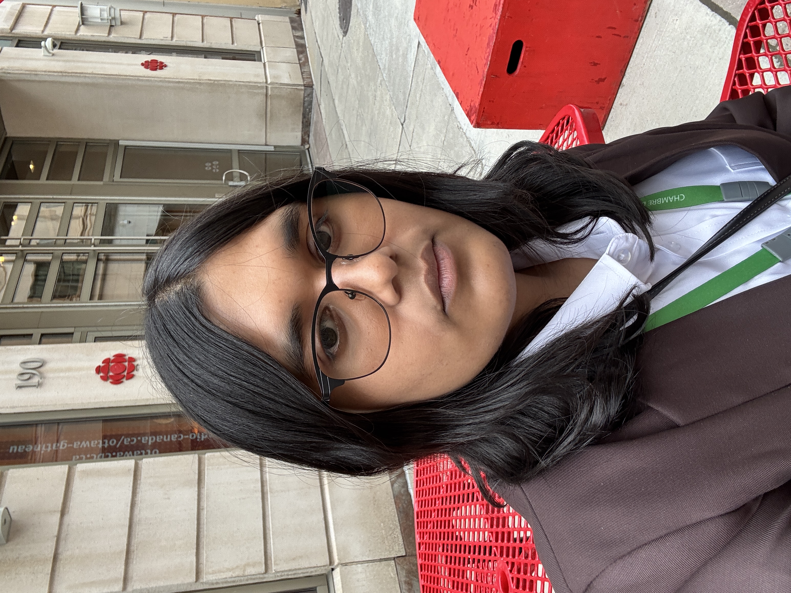
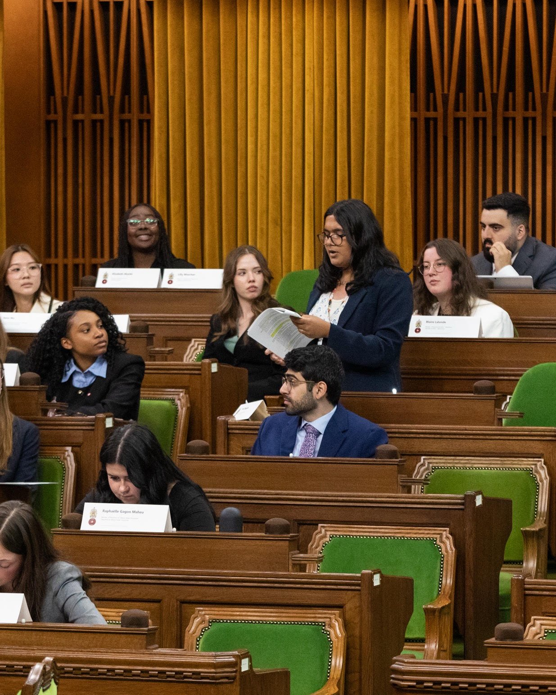

Science writing · 01
Earth observation articles
Research-driven writing for Pixxel Space on Earth observation, agriculture, climate, biodiversity, and environmental monitoring.
Environmental geosciences · Earth observation · Science communication
I'm an Environmental Geosciences student at the University of Saskatchewan, interested in how Earth observation, environmental research, and clear communication can help people understand the places they live. My experience includes geospatial writing, public service, and community engagement.
Explore selected work
01 / About

I'm pursuing a Bachelor of Science in Environmental Geosciences at the University of Saskatchewan.
My academic interests include environmental monitoring, remote sensing, biodiversity, water quality, and the ways scientific evidence informs decisions.
Alongside my studies, I research, write, and edit content about Earth observation and geospatial technologies for scientific and industry audiences. During the summer of 2026, I worked as an assistant in the Office of Secretary of State Buckley Belanger, supporting research, communications, events, and office activities.
Community work is another part of my experience. I have contributed to conservation outreach and shoreline cleanups with the Canadian Wildlife Federation and supported youth programming and events with Girls Rock Saskatoon.
Education
BSc, Environmental Geosciences | University of Saskatchewan
In progress
02 / Selected Work
Science writing · 01
Research-driven writing for Pixxel Space on Earth observation, agriculture, climate, biodiversity, and environmental monitoring.
Research communication · 02
Research, drafting, and visual design contributions to the Taylor Geospatial Institute AWS Generative AI Challenge Report.
Video storytelling · 03
Short-form and interview videos for GoGeomatics, covering geospatial technologies and industry applications.
03 / Skills
Earth observation; remote sensing concepts; satellite imagery research; environmental monitoring topics; biodiversity; water quality.
Research; information synthesis; science writing; editing; fact-checking; presentations; community outreach.
Adobe Creative Suite; Canva; WordPress; video editing; Microsoft Office; Google Workspace; Zotero; Mailchimp.
04 / Contact
I'm interested in learning and contributing through opportunities in environmental geosciences, Earth observation, science communication, and related fields.